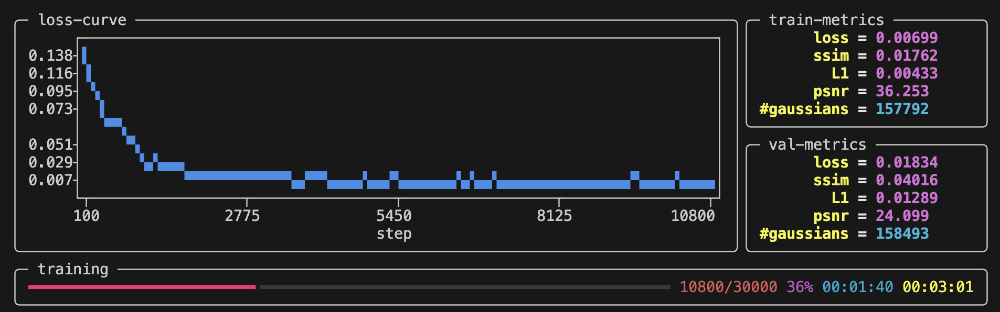

Quickstart
We are going to start from a simple example with the scene data/blender/lego , where a 3D Gaussian Splatting model will be trained, tested, exported and visualized. You can find code from RadianceFieldStudio/examples/quickstart .
1. Data Preparation
Download NeRF Synthetic Dataset from HuggingFace Repository maintained by NerfBaselines .
cd RadianceFieldStudio
python scripts/data/download.py blender --scene lego --use-proxy # Use proxy for Chinese users
You will get Lego now: data/blender/lego .
3. Train a 3DGS
The script examples/quickstart/01_train_3dgs.py provides code for 3DGS training:
Run the script in your terminal and you can watch progress from the terminal:

4. Check Training Results
After training for ~5min, the task will be done and you can use Ctrl+C to exit.
The related training results will be dumped at outputs/test/${timestamp} :
-
Checkpoints: Model weights are saved at
outputs/test/${timestamp}/ckpts. -
Validation: novel views as well as their ground truth are rendered at
outputs/test/${timestamp}/dump/val. -
Log: training details will be logged at
outputs/test/${timestamp}/log.txt. -
Arguments: training arguments will be automatically generated at
outputs/test/${timestamp}/task.py. (1)-
It enables you to rerun an experiment with the completely same arguments, simply by:
-
5. Write Your First Script
In Section 3, we have run an existing train script. Next, we are now going to write our own script from scratch.
5.1 Hello World
Create a new script named test.py and start with Hello World :
5.2 Start From Task
The above script succeed in executing the main function run . Similarly, Radiance Field Studio abstracts any executable script into a Task class, which always has a run method as the entry point of the script. Users need to import the Task class as a base class and override its run method through inheritance:
5.3 CLI Support
One of the advantages of doing this is that Radiance Field Studio provides convenient command-line support based on tyro. The dataclass decorator is used to add fields to this class, after which these fields will be automatically recognized:
$ python test.py -h
usage: test.py [-h] [OPTIONS]
╭─ options ─────────────────────────────────────────────────────────────────────────╮
│ -h, --help show this help message and exit │
│ --seed {None}|INT (default: None) │
│ --cuda {None}|INT (default: None) │
│ --num-a INT ellipsis means "required" (required) │
│ --num-b INT default value is 6 (default: 6) │
│ --num-c INT ellipsis means "required" (required) │
│ --info STR default value is 'Hello World!' (default: 'Hello World!') │
╰───────────────────────────────────────────────────────────────────────────────────╯
$ python test.py --num-a 1 --num-c 3
Hello World!
self.num_a + self.num_b + self.num_c = 10
$ python test.py --num-a 1 --num-c 3 --num-b 9 --info "Good Morning\!"
Good Morning!
self.num_a + self.num_b + self.num_c = 13
5.4 Edit Argument
Before we call run function to execute the task, it is possible for us to explicitly initialize the arguments or dynamically modify them:
$ python test.py -h
usage: test.py [-h] [OPTIONS]
╭─ options ──────────────────────────────────────────────────────────╮
│ -h, --help show this help message and exit │
│ --seed {None}|INT (default: None) │
│ --cuda {None}|INT (default: None) │
│ --num-a INT ellipsis means "required" (required) │
│ --num-b INT default value is 6 (default: 7) │
│ --num-c INT ellipsis means "required" (default: 9) │
│ --info STR default value is 'Hello World!' (required) │
╰────────────────────────────────────────────────────────────────────╯
5.5 Serialization & Deserialization
Radiance Field Studio provides APIs for serialization and deserialization of Task. For example, the class method TrainTask.load_from_script is used to deserialize Task object from outputs/test/${timestamp}/task.py, which is automatically generated in Section 3 . We can use the API to build a simple tester.
6. Test Your Model
Rewrite test.py for pretrained model testing: (1)
- You can also find the code at RadianceFieldStudio/examples/quickstart/03_test_3dgs.py .
Run the script and the results are:
7. Visualize 3DGS
Create another script named visualize.py for visualization: (1)
- You can also find the code at RadianceFieldStudio/examples/quickstart/04_visualize_3dgs.py .
Then, you can visualize 3DGS in the interactive web viewer.